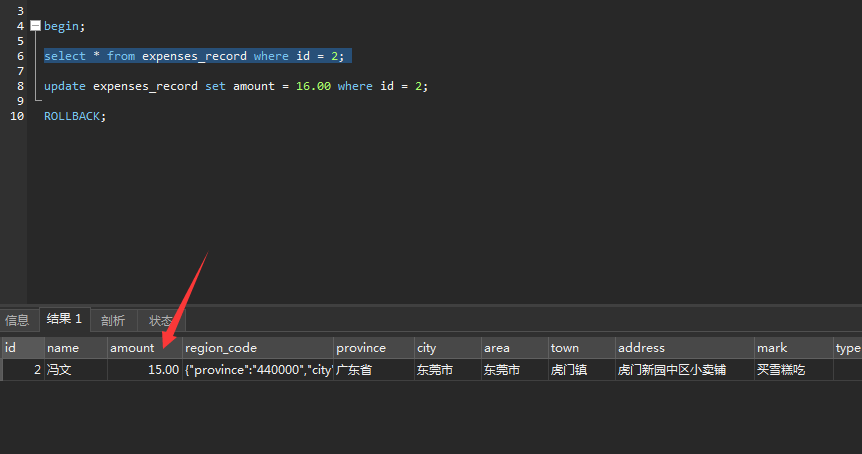
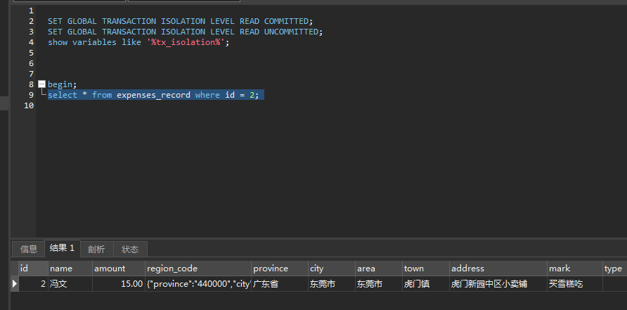
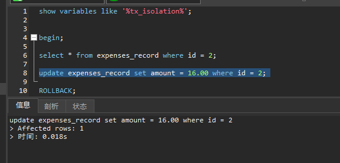
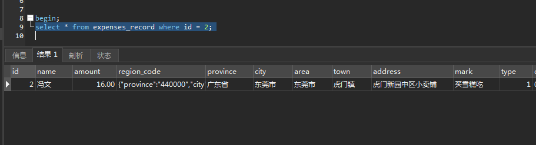
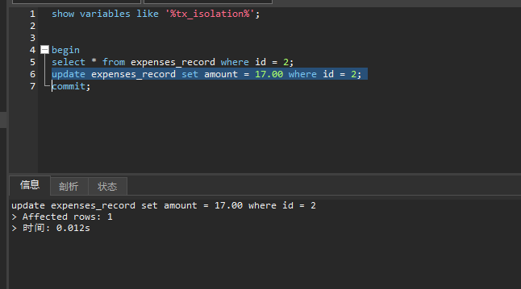
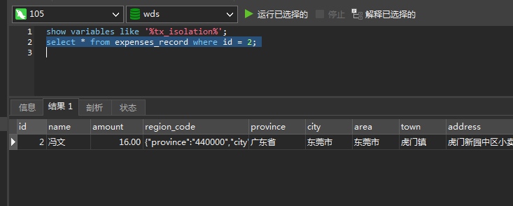
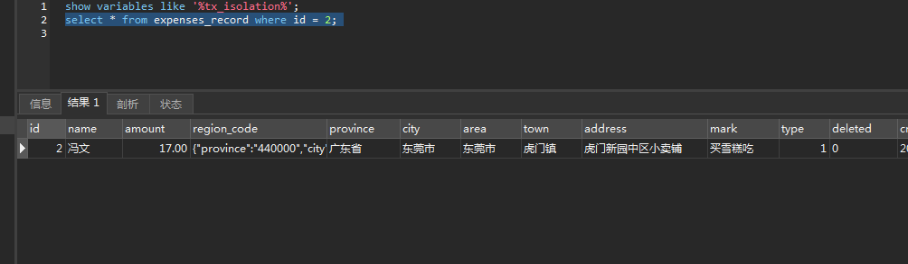

Spring Transaction注解
1. 四特性
A
Atomicity，事务不可分割，转账时：A扣款B收款，这个操作要视为一个操作，最小操作单元。
C
Consistency，数据要保持一致性。200元的转账，A少了200，那B一定是多了200。
I
Isolation，不应受到其他事务干扰，不能受到A转给C的干扰，比如不能说A转给C100，但是A账户还从500剩400。应该先减去B的200，再减去C的100。还剩200。
D
Durability，一旦结束，就应该持久到数据库。
2. 隔离级别
RU
Read Uncommitted，未提交读，会引起脏读。指能读到别的事务未提交的数据。比如A事务修改但是最后回滚，但是B事务读取到了修改的数据。(造成脏读)
   
RC
Read Committed，提交读，oracle的默认级别。指A事务中只要B提交的数据就能被读到，两次结果不同。比如A事务下单失败，因为抢占CPU失败了，进行重试。但是B事务此时把库存扣完了。A从新读取发现库存已经被扣完。或者A发现查询卡里有2000块，进行消费，但是B已经消费完了2000，此时A再次读取发现卡里没钱了，消费失败。（造成不可重复读）
 
commit之后 
RR
Repeatable Read，重复读，mysql默认级别。解决了不可重复读。 幻读指的是在一个事务内，同一 SELECT 语句在不同时间执行，得到不同的结果集时，就会发生所谓的幻读问题。 比如select * from order where amount < 10;
！mysql如何在RR级别解决部分幻读的问题的
select 分为快照读（MVCC multi version concurrency control）和实时读(innodb)，快照读通过并发多版本控制解决。实时读通过间隙锁解决。
MVCC（multi version concurrency control)是如何解决幻读的，首先，针对每行数据，都会有多个版本，而且每个版本上会有两个隐藏字段，当前版本和删除版本。 对于insert，会将当前版本设置为当前事务id 对于update，会将新行数据的当前版本设置为当前事务id，并且将老行数据的删除版本设置为当前事务id 对于delete，会将当前删除版本设置为当前事务id 对于select，只读取删除版本为空且当前版本小于等于当前事务id的数据 这是种无锁实现。 正常的SELECT语句，后面不加FOR UPDATE和LOCK IN SHARE MODE的，就是用的MVCC去读。 参考
当前读的幻读解决办法为间隙锁，锁的大致结构如下:
- 行锁(Next-Key Locks)
- 记录锁 （找到确切记录）
- 共享锁(select ... lock in share mode)
- 排它锁 (select ... for update)
- 间隙锁（范围内没有确切记录，为左开右闭，[0,100）(100, 正无穷)这种，间隙锁之间共享，不阻塞）
- 插入意向锁（之间不阻塞，但和间隙锁阻塞）
- 记录锁 （找到确切记录）
所以会造成死锁，即两个for update，两个insert，都被对方的间隙锁锁住了。mysql会监控到并回滚其中一个事务。 所有行锁都针对有索引情况，没索引会锁表。
S
Serializable，序列化。每个事务按顺序执行，读写阻塞。写写阻塞。
传播机制
- 支持当前事务
- propagation_required，当前存在，则使用。否则新建一个。
- propagation_supports，当前存在，则使用，否则不使用。
- propagation_mandatory，当前存在，则使用，否则抛异常。
- 不支持当前事务
- propagation_requires_new，总是新建事务，如果当前有，则将当前的挂起。
- propagation_not_supports，总是不支持，如果当前有，则将当前的挂起。
- propagation_never，总是不支持，如果当前有，则抛异常。
- 嵌套
- propagation_nested，当前存在，则创建一个嵌套事务运行，如果当前没有。相当于required。
- 最常用 三种
- required，上游回滚，下游也会，同理下游回滚，上游也会
- requires_new，上游回滚，下游不会。下游抛异常，上游依然回滚。但如果下游单纯回滚，上游也不会被影响。
- nested，上游回滚，下游也会。下游回滚，上游不会。